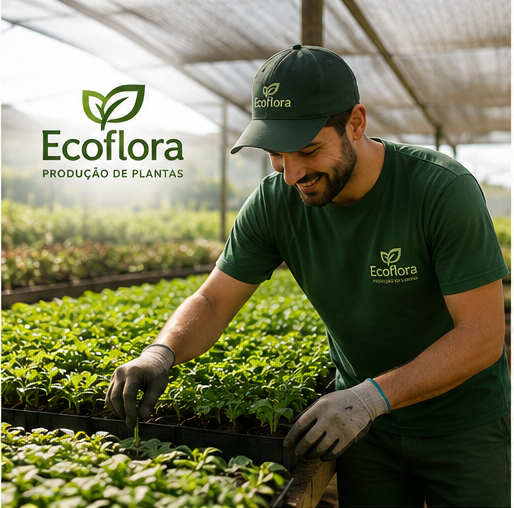
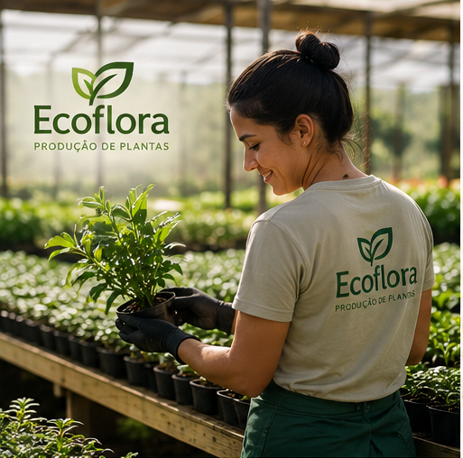
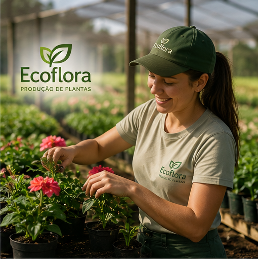
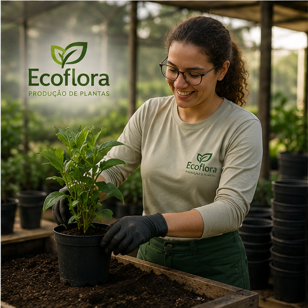

Bem-vindo à Ecoflora, uma granja especializada na produção e cultivo de plantas ornamentais, flores e mudas de alta qualidade.

Bem-vindo à Ecoflora, uma granja especializada na produção e cultivo de plantas ornamentais, flores e mudas de alta qualidade.

Nossa missão é oferecer plantas que levem mais vida, beleza e bem-estar para residências, empresas e jardins.

Na Ecoflora, acreditamos que o contato com a natureza transforma ambientes e melhora a qualidade de vida.

Contamos com uma equipe apaixonada por jardinagem e paisagismo, sempre pronta para orientar nossos clientes na escolha da planta ideal e compartilhar dicas de cultivo para que cada espécie se desenvolva da melhor maneira possível.
Nosso compromisso vai além da produção de plantas: queremos inspirar pessoas a criar ambientes mais verdes, acolhedores e harmoniosos. Seja para decorar sua casa, presentear alguém especial ou transformar um jardim, a Ecoflora está pronta para oferecer qualidade, confiança e o encanto que só a natureza pode proporcionar.
Ecoflora — Cultivando vida, beleza e sustentabilidade para o seu dia a dia.